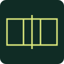

Plano de trazado
ESCALA 100 %Límites y ataqueEsquinas y postesVista superior
DIAGONAL A–C / B–D20,12 m
POSTES ENTRE EJES11 m
ÁREA DE JUEGO162 m²
Medidas y red

Descargar modelo USDZEl tamaño elegido queda bloqueado en AR.
Para AR: Safari en iPhone o iPad.
Abre esta misma dirección en tu dispositivo. Aquí puedes ajustar las medidas y descargar el modelo.
Cómo colocar y marcar la cancha
- Abre AR y apunta al suelo hasta que aparezca la cancha.
- Arrastra y gira con dos dedos para alinear un borde con tu patio.
- Marca el centro de las cuatro cruces amarillas de esquina y las dos de los postes. Comprueba lados y diagonales con cinta.
AR puede desviarse al caminar. No reconoce estacas ni guarda la posición entre sesiones.
Deja al menos 3 m libres alrededor: 24 × 15 m para la cancha de 18 × 9 m. En competiciones oficiales FIVB: 5 m laterales y 6,5 m al fondo. Consultar medidas FIVB.